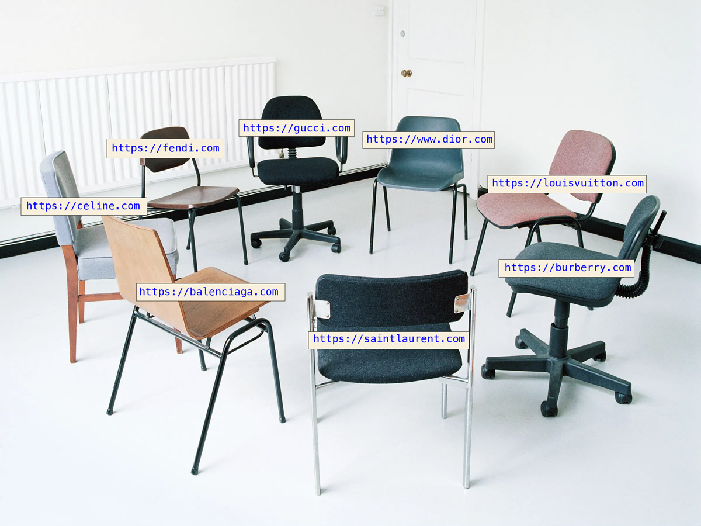

27 Jan 2021

Websites are in bad shape
• Between 2003 and 2019, the average webpage weight grew from about 100KB to about 4MB. The average time it takes to fully load a webpage is 10.3 seconds on desktop and 27.3 seconds on mobile.
• The causes of webpage bloat? Images, videos and 3rd party scripts are mainly to blame. You think you’re accessing one website or app, but then all these other 3rd parties start accessing you. The top 50 most visited websites have an average of 22 third-party websites hanging off them.
Why is this a problem?
• Because people hate when websites don’t perform well. Study after study shows that people absolutely hate slow web pages. In 2018, Google research found that 53% of mobile site visitors left a page that took longer than 3 seconds to load.
• And at the same time, e-commerce grew by 35%. Well we spent a year at home on the internet...
• The problem is that the conversion rate for e-commerce websites is very sensitive. A 100-millisecond delay in website load time can hurt conversion rates by 7% according to Akamai.
• In other terms, technical debt is an opportunity cost! Every penny invested in improving your e-commerce site will bring many more pennies. But for some reasons many large companies still consider that their website is an online PowerPoint and prefer to put their money in stores they happened to close due to covid. For this read our review of Prada.com and Dior.com.
The solution?
• Delete. There is a tremendous amount of out-of-date content on websites.
• Refactor. Poorly written, out-of-date code is also a major problem. By cleaning up its JavaScript code, Wikipedia estimated that they saved 4.3 terabytes a day of data bandwidth for their visitors.
• Clean up the visual language. Create a design system. Before you add any visual element, make sure that it does something useful and it’s the most optimized image possible. Work with digital agencies who think about the page weight of every design decision they make.
• Redesign is rehab for websites. Every 2-3 years some manager either gets bored with the design or some other manager meets a customer who tells them about how horrible it is to find anything on the website. A Redesign project is the perfect opportunity for the digital design/UX team to round up both top and low-level pages and for developers to ditch the spaghetti codebase.
No budget for a Redesign?
If you must do something, do something useful. That often means not doing any projects before you first: remove, minimize and clean up.
FINAL THOUGHTS
We are not an agency and don’t sell anything here at fashionweb, but we want to contribute to this rehab movement in fashion e-commerce by building a community of doers. So please send us tips, stories, articles, whatever you deem interesting to share.
Main source: Gerry McGovern's Book World Wide Waste